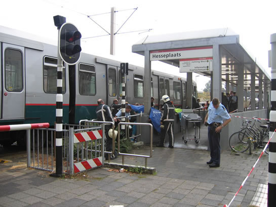

Fietser aangereden door sneltram...
- zondag 07 december 2008 18:06
- Geschreven door Simon
Gistermiddag vond er een aanrijding plaats tussen een fietser en een sneltram op de kruising Martin Luther Kingweg in Ommoord. Een 72-jarige man passeerde de slagboom van de AHOB-installatie door via de linker rijstrook van het fietspad te fietsen en werd geraakt door een passerende sneltram. De aanrijding vond plaats omstreeks 17.15. Het slachtoffer fietste in zuidelijke richting en stak de kruising over aan de kant van station Hesseplaats. De fietser werd geschept aan de rechter zijde van de sneltram en belandde tussen de toegang van het metrostation en het spoor. Kort na de aanrijding zijn de passagiers uit de metro geholpen, die de volledige kruising Martin Luther Kingweg blokkeerde. De fiets werd meters het station ingeslingerd.
De politie was enkele minuten na de aanrijding ter plaatse, de ambulance arriveerde kort daarop. De brandweer arriveerde ook, dit om te te assisteren bij eventuele beknelling van het slachtoffer. Dit was niet aan de orde. Het slachtoffer werd met onbekende verwondingen overgebracht naar het Erasmus Medisch Centrum, volgens getuigen was het slachtoffer nog wel aanspreekbaar.
De sneltram die betrokken was bij de aanrijding was wagendienst 569, een driewagentrein bestaande uit (van voren naar achteren) de rijtuigen 5260, 5242 en 5248. De wagendienst was onderweg naar Schiedam Centrum toen de aanrijding plaats vond op spoor 1. Rijtuig 5260 liep lichte schade op als gevolg van de aanrijding: enige lakschade en een defect geraakt frontsein (koplamp). De wagendienst werd achteruit gereden en tijdelijk op wisselcomplex Nieuw Verlaat geparkeerd. Vervolgens werd de kruising opnieuw benaderd, en werd het ongeluk gereconstrueerd. Dit gebeurde rond 18.15. Vervolgens werden enkele railremtests uitgevoerd op het sneltramtraject tussen Nieuw Verlaat en De Tochten met wagendienst 569.
Gedurende de stremming werden metro's met eindbestemming Nesselande omgeleid naar Ommoord. Er werd vervangend busvervoer ingezet om passagiers te vervoeren van station Graskruid naar de stations Hesseplaats, Nieuw Verlaat, Ambachtsland, De Tochten en Nesselande. Tevens auto's en buslijnen werden omgeleid gedurende de stremming. Om 18.45 werd de kruising weer vrijgegeven, enkele minuten later werd het metroverkeer van en naar Nesselande weer hervat en werd de normale dienstregeling weer zo goed mogelijk opgepakt. Rond 18.50 vertrok wagendienst 569 naar remise 's Gravenweg.
Retmetro.nl en Ger Quellhorst maakten onderstaande foto's bij de afwikkeling van de aanrijding.
.
Het slachtoffer wordt tussen het station en de sneltram vandaan gehaald, de brandweer verleent assistentie.
De aanrijding trok veel aandacht van voorbijgangers.
Rechts de ambulance, die het slachtoffer afvoerde.
De kruising Martin Luther Kingweg was geheel geblokkeerd (foto met dank aan Ger Quellhorst).
Foto genomen vanaf nabij gelegen kruising Schout Bontenbalpad, op de voorgrond wisselcomplex Nieuw Verlaat, in de verte wagendienst 569.
De driewagentrein wordt tijdelijk geparkeerd op wisselcomplex Nieuw Verlaat, één van de twee frontseinen van het rijtuig is uitgevallen als gevolg van de aanrijding.
Zo nauwkeurig mogelijk wordt de fiets weer tegen het rijtuig geplaatst, om het ongeval te reconstrueren.

Het ongeval gereconstrueerd, duidelijk is dat de fietser de slagbomen heeft proberen te "slalommen".
De verdere zichtbare schade aan het rijtuig.
De fiets van het slachtoffer is eveneens beschadigd geraakt.
Er werd vervangend vervoer aangeboden in de vorm van bussen (lijnnummer 60, "metrodienst"), voetgangers, fietsers en auto's mochten af en toe de kruising passeren.
Deze wagendienst richting Nesselande, nummer 573 bestaande uit rijtuigen 5205 en 5246 kon niet verder rijden door de aanrijding.
 Projectpagina Plaatsing AHOB's langs sneltramtrace
Projectpagina Plaatsing AHOB's langs sneltramtrace